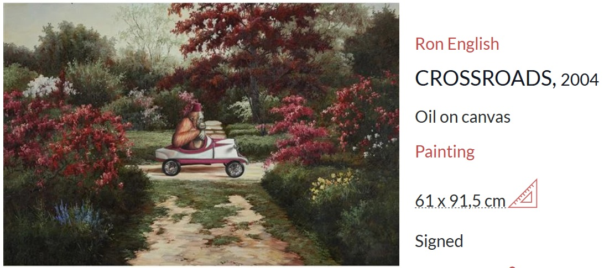
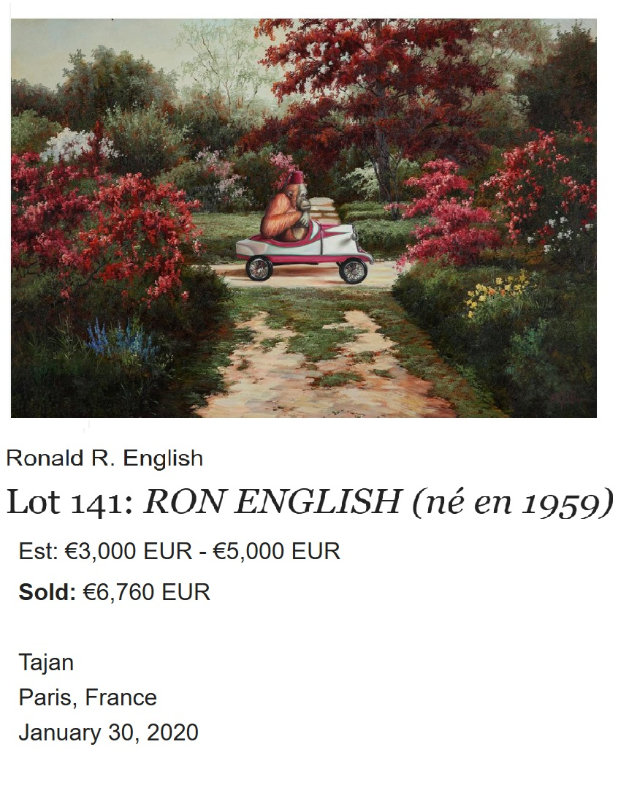

Exhibitions
Opera Gallery, gallery presentation, New York, New York, US, circa 2000s.
Literature
Ron English, Abject Expressionism: The Art of Ron English (San Francisco: Last Gasp, 2007), p. 54. ISBN 978-0867196894.
Notes
Also known as Crossroads.
This work appears on MutualArt’s artwork page as CROSSROADS.
This work appears in an Invaluable auction listing.
Ancillary Documentation
The following materials document online artwork-page and auction-listing circulation for this work.

